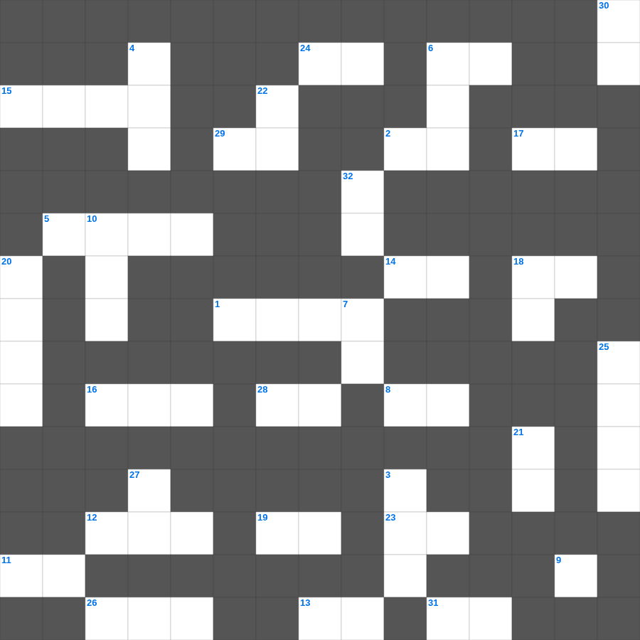

에스더 마스터 100 (2/2)
📌 서비스 정의
십자가로세로는 교회 주보와 주일학교에서 사용할 수 있는 성경 기반 가로세로 퍼즐 서비스입니다. 성경 인물, 사건, 핵심 구절을 바탕으로 제작되었습니다. 온라인 풀이 및 인쇄 기능을 제공합니다.
📖 에스더란?
에스더는 페르시아 제국에서 유대인 왕비가 된 에스더가 동족을 멸망의 위기에서 구해내는 이야기로, 하나님의 이름이 직접 언급되지 않지만 그분의 보이지 않는 손길을 보여줍니다.
📚 에스더의 주요 사건·주제
에스더의 왕비 즉위 · 하만의 유대인 멸절 음모 · 모르드개의 위기 · 에스더의 결단과 잔치 · 부림절의 기원
에스더의 말씀을 퀴즈로 배우는 에스더 가로세로 퀴즈입니다. 가로 힌트와 세로 힌트를 보고 35개의 단어를 맞춰보세요. 인쇄도 가능하고 정답 확인도 바로 되니 소그룹 모임이나 가정 예배 시간에도 활용하실 수 있습니다.

📝 가로 힌트
1. 예수의 유년 시절을 기록한 유일한 복음서
2. 하나님이 밤에 솔로몬에게 나타나 성전을 무엇하는 집으로 삼으셨나
5. 모세의 온유함이 지면의 모든 사람보다 이것하더라
6. 미가서와 이사야서에 공통으로 등장하는 평화의 상징 (칼을 쳐서 이것으로)
8. 이것이 장래에 자기를 위하여 좋은 터를 쌓아 참된 생명을 취하는 것이니라
9. 나의 사랑 너는 어여쁘고 아무 이것이 없구나
11. 다시 기도하니 하늘이 비를 주고 땅이 이것을 내었느니라
12. 나실인이 멀리해야 할 음료
13. 부활하신 예수를 만난 두 제자가 이 소식을 알렸으나 나머지 제자들이 이것 하지 않음
14. 사람이 무엇으로 심든지 그대로 이것리라
15. 속건제를 드릴 때 보상하는 액수는 원래의 이것에 1/5을 더함
16. 나병 환자의 정결 예식에 쓰이는 붉은 실과 이것
17. 여호와께서 대면하여 아시던 자
18. 여리고에서 물건을 훔쳐 이스라엘을 패배하게 한 사람
19. 우리 구주 예수 그리스도로 말미암아 우리에게 그 성령을 이것히 부어 주사
23. 마지막 만찬 때 잔을 주시며 이르시되 이것은 많은 사람을 위하여 흘리는 나의 피 곧 이것의 피니라
24. 보라 솔로몬의 가마라 이스라엘 용사 중 이것 명이 둘러쌌는데
26. 칠 년마다 돌아오는 정기적인 율법 낭독 시기
28. 우리가 그를 사랑함은 그가 이것 우리를 사랑하셨음이라
29. 광야에서 주신 만나의 목적 '너를 낮추시며 너를 이것하사'
📝 세로 힌트
3. 여호와의 말씀이니라 보라 날이 이르리니 내가 이스라엘 집과 유다 집에 이것을 맺으리라
4. 레위 지파가 아브라함의 허리에 있을 때에 멜기세덱이 그를 만났으므로, 레위도 멜기세덱에게 이것을 바쳤다고 할 수 있음
6. 성령님이 우리 곁에서 돕는 분이라는 뜻
7. 베드로후서 2장 18절: 그들은 무엇을 사용하여 유혹하나
10. 백부장과 예수를 지키던 자들이 이 일들을 보고 심히 두려워하여 이르되 이는 진실로 이것의 아들이었도다
10. 바울은 누구의 종인가
18. 포도원 농부 비유에서 주인이 마지막으로 보낸 이
20. 전도자가 이르되 헛되고 헛되며 헛되고 헛되니 모든 것이 이것이로다
21. 이스라엘 자손은 스스로 깨끗하게 하여 이것할지어다
22. 혹 이것하는 자가 너희를 시험하여 우리 수고를 헛되게 할까 염려함이니
25. 모세의 뒤를 이어 이스라엘의 지도자가 된 사람
27. 그러므로 너희 죄를 서로 고백하며 병이 낫기를 위하여 서로 이것하라
30. 죄인들아 손을 깨끗이 하라 두 마음을 품은 자들아 마음을 이것하게 하라
32. 음행을 피하기 위하여 남자마다 자기 아내를 두고 여자마다 자기 이것을 두라
🧩 이 퍼즐에서 배우는 내용
이 퍼즐은 에스더 마스터 100 (2/2)의 핵심 단어와 개념을 자연스럽게 복습할 수 있도록 구성되었습니다. 주일학교 수업이나 개인 성경공부에서 학습 내용을 점검하는 용도로 바로 활용할 수 있습니다.
🧑🏫 교회 교육 자료 활용
이 퍼즐은 주일학교 교재 추천 자료로 활용할 수 있고, 주일학교 주보에 넣기 좋은 분량으로 구성되어 있습니다. 수업용 주일학교 교안에 활동지로 붙이거나, 예배 후 복습용 주일학교 공과교재로 바로 사용할 수 있습니다.
🏷️ 키워드
에스더 가로세로 퀴즈, 에스더, 십자가로세로, 성경퀴즈, 말씀퀴즈, 가로세로퍼즐, 주일학교 교재 추천, 주일학교 주보, 주일학교 교안, 주일학교 공과교재